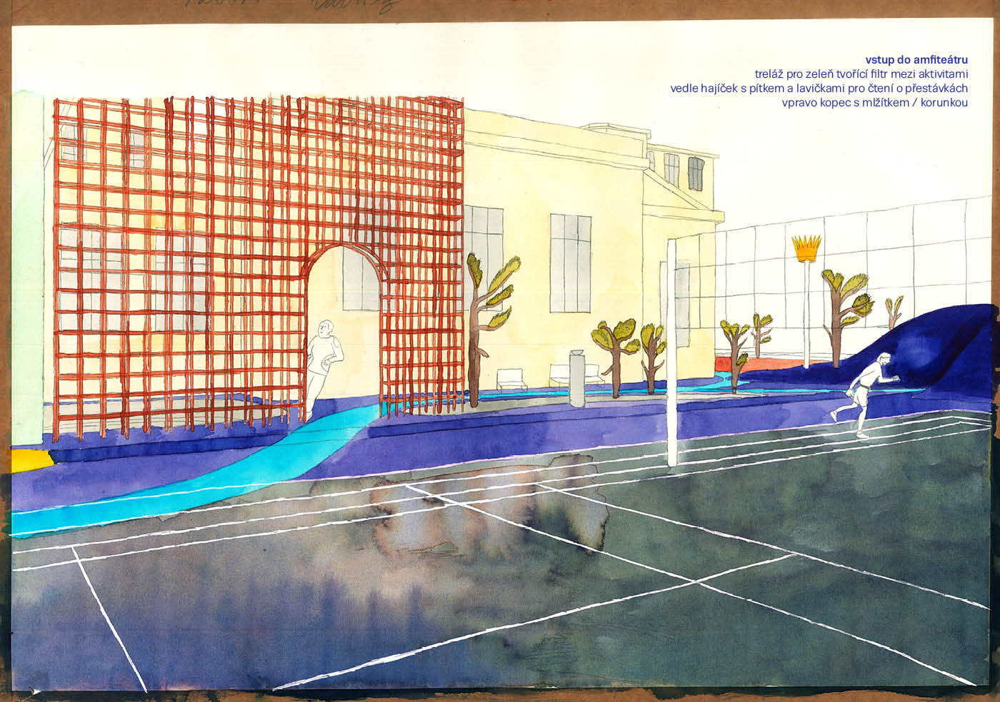
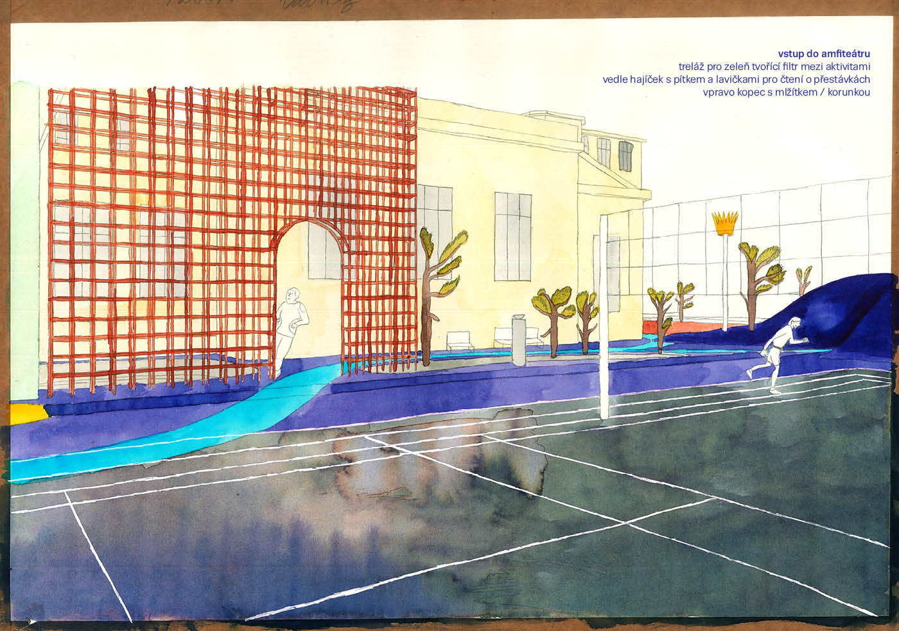
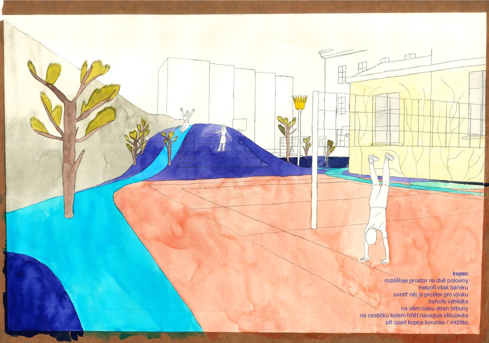
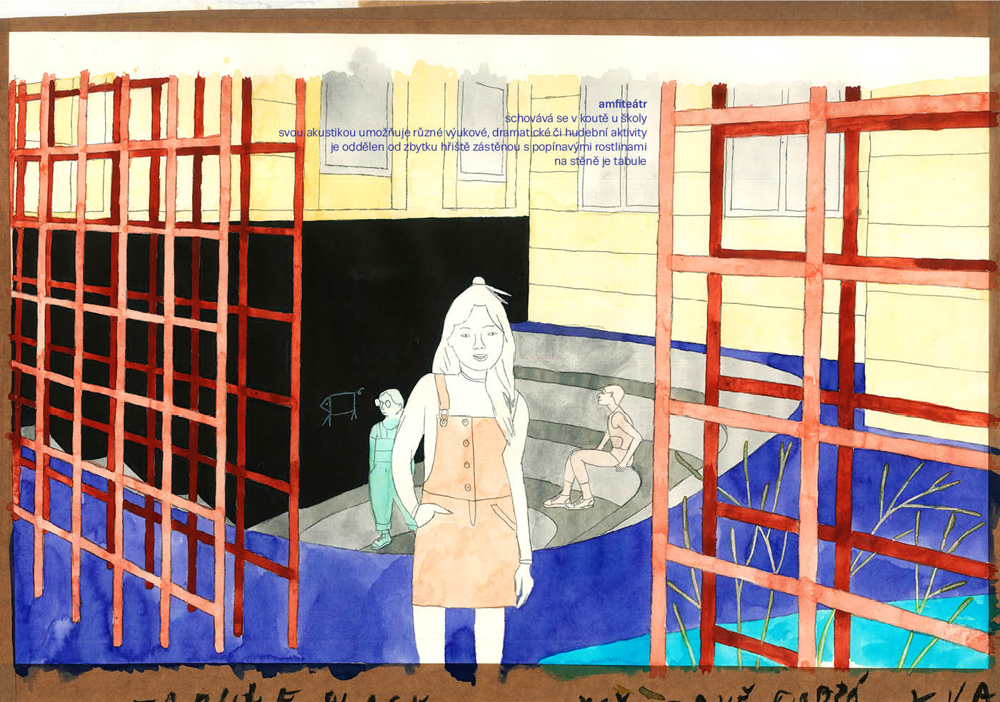
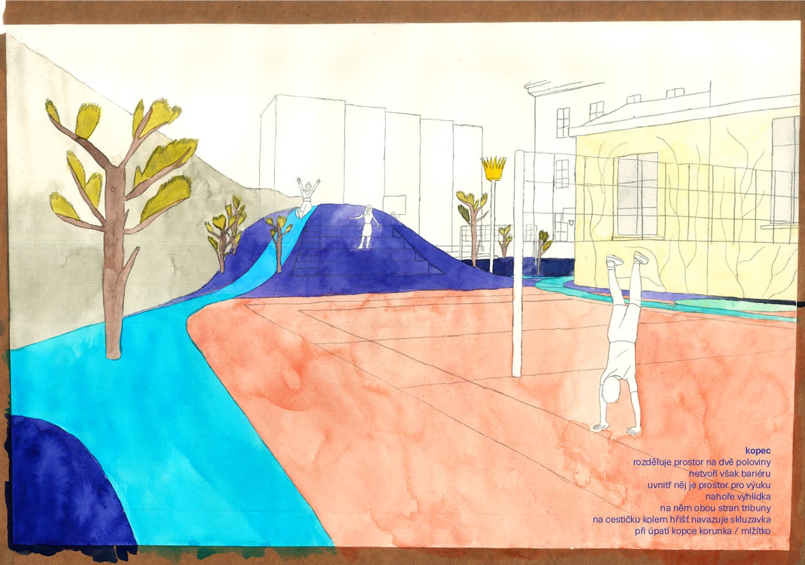
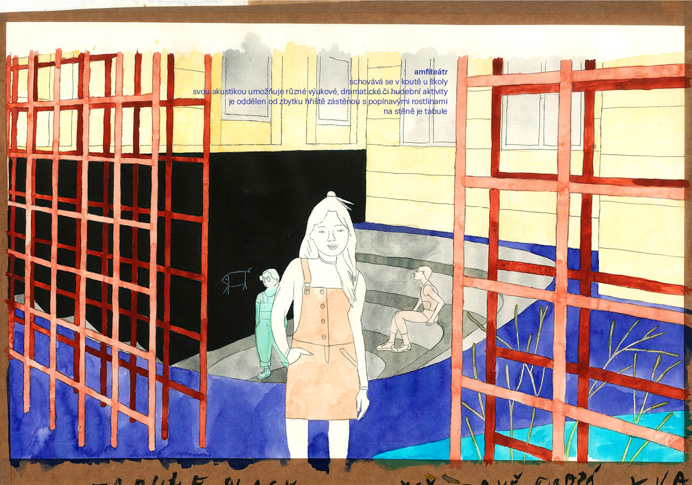
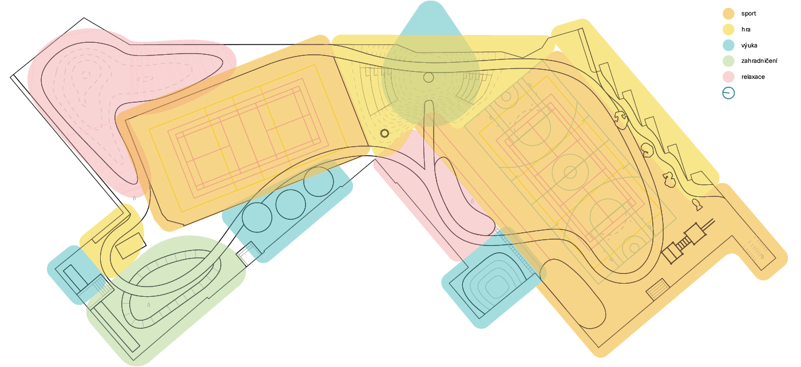
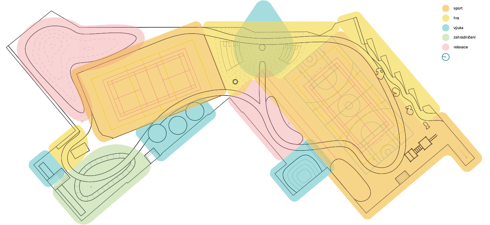
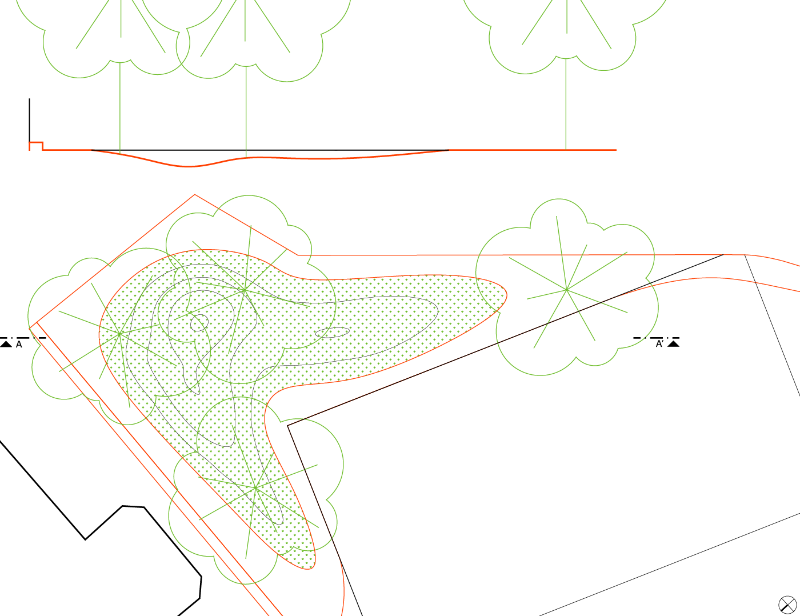
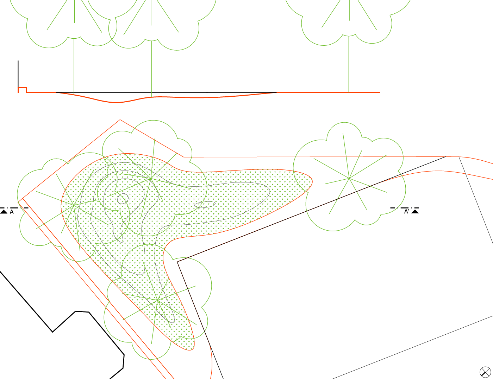

-


 
 

-
 

 



ZŠ Korunovační Praha – rekonstrukce školního dvora
2019 - dosud
Zobrazit text
2019 - dosud
Zobrazit text
ZŠ Korunovační Praha – rekonstrukce školního dvora
Zadání
Škola potřebuje nutně zvýšit využitelnost dvora vložením celé řady dalších funkcí a typů prostor. Nezbytné je zbudovat druhé sportovní hřiště ve vyhovujícím stavu (povrch), venkovní třídu, prostor pro studium, relaxaci i hru, truhlíky pro zahradničení počtem odpovídající celkovému množství tříd, vodní prvky, zázemí pro venkovní výuku. Výhodou by bylo umístění venkovní posilovny, rozběhové dráhy a doskočiště pro skok daleký a lezecké stěny. Důraz je kladen na vhodnost povrchů, bezpečnost, životnost a multifunkčnost hřiště.
Materiálové řešení
Stávající materiálové řešení je nevyhovující. Jedinou plochou, která zůstane zachována, je pryžové hřiště. Úsek v severní části dvora zůstane travnatý, ostatní travnaté plochy budou eliminovány a nahrazeny vhodnějším povrchem. Zbytek hřiště včetně povrchu kopce bude řešen v lité pryži. Výhodou tohoto materiálu je jeho snadná údržba (cca 1× ročně čištění vysokotlakoou vodou), dlouhá životnost (při správné údržbě 15 let, pak následují drobné opravy), čistota (nezanášení špíny do budovy) a způsob pokládky. Ta je možná na stávající asfaltový povrch, jehož odstranění by bylo náročné z ekonomického, ekologického, časového i praktického hlediska. Komplikovaný přístup na školní dvůr není pro provedení pryžového povrchu překážkou, materiál se dopravuje v pytlích a míchá na místě. Jeho pokládku nedoprovází vysoká prašnost, jako u mnoha jiných materiálů. V okolí herních prvků je možné navýšit podkladní vrstvu pryžového materiálu tak, aby se docílilo bezpečných povrchů při pádu z výšky. Materiál je také možné dotáhnout až do těsné blízkosti k překážkám (např. k sochám ryb), drží na šikmých i vertikálních plochách, umí si poradit s jakýmikoliv oblými tvary. Propouští vodu, která pak stéká po podkladním povrchu do kanalizace a dále pak do nových retenčních nádrží. Pryž je výhodná i z hlediska přímého kontaktu se stromy, kdy se pozitivně uplatňuje dostatečná prosákavost okolního povrchu. V létě se nepřehřívá tolik jako asfalt.
Prostorové řešení
Vměstnání velkého množství aktivit na poměrně malou plochu školního dvora vede přirozeně k jejich překryvu. Základním rozdělením hřiště do zón sportu, hry, relaxace, výuky a pěstitelské části dochází k vymezení prostoru tak, aby mohlo co největší množství aktivit probíhat souběžně. Snažíme se vyhnout jednoúčelovým prostorám. Pokud je to možné, neurčujeme konkrétní způsob využívání jednotlivých míst, spíše nabízíme širokou paletu míst a funkcí, se kterými je možné pracovat jako s pomůckami pro výuku. O přestávkách a v čase odpolední družiny slouží hřiště k volnému pobytu žáků, naší snahou je vytvořit ze dvora svobodné místo s různými atmosférami.
Snažíme se maximálně vyhnout překážkám v rámci plochy hřiště. Bariéry dělící od sebe různé aktivity vytváříme pomocí tvarování dvora jako krajiny. Ústředním prvkem hřiště se stává kopec vložený mezi dvě sportovní hřiště. Zvenčí slouží kopec jako hranice dvou křídel dvora, odraziště míčů při tělesné výchově, místo s největším rozhledem pro dozorujícího pedagoga. Na každé sportovní hřiště je z kopce orientovaná tribuna pro cca 20 žáků. Z vrcholu kopce vede na každou stranu jedna skluzavka. Interiér kopce slouží jako venkovní “jeskynní” třída vhodná pro menší skupinovou výuku. Zadní stěnu tvoří tabule. Uprostřed prostoru je umístěn kruhový stůl s lavicí. Osvětlení vnitřku kopce je zajištěno pomocí kruhového zasíťovaného otvoru na vrcholu kopce. Tudy také proudí vzduch vnikající do kopce vstupním otvorem. V deštivém počasí by bylo uzavření kopce řešeno poklopem s otvory po stranách, aby bylo zachováno přirozené větrání. Interiér kopce bude možno osvětlit též umělým osvětlením.
Opakem kopce se stává “ďolík” a amfiteátr.
V severní části hřiště, u zahloubených sousedních dvorků, navrhujeme ponížení terénu, krajinu s prohlubněmi, ve kterých se dá sedět při výuce i ležet při relaxaci. V tomto místě je také jediná travnatá plocha s automatickou závlahou. V místě současného vzrostlého javoru počítáme s výsadbou nového listnatého stromu. Zároveň do travnaté plochy umisťujeme další stromy, které dotvářejí přírodní atmosféru. Okolo stromů je možné umístit hamaky.
V koutě vzniklém mezi jižním křídlem školy a tělocvičnou vytváříme amfiteátr. Zahloubený prostor s kapacitou až 50 dospělých osob, který slouží jako největší venkovní učebna a může být využit také pro malé besídky či dramatickou výuku. Žák stojící uprostřed publika není na vyvýšeném pódiu ale naopak pod úrovní hlediště, prostor se stává příjemnějším pro přednes před ostatními. Tento princip výuky využívá také montessori vzdělávání. Plocha za jevištěm slouží jako velká tabule. Amfiteátr je od nového sportovního hřiště oddělen mříží s popínavými rostlinami, která slouží jako ochrana před míči, stínění, chlazení a také jako akustická bariéra.
Před amfiteátrem u stěny tělocvičny se nachází místo zvané “hájíček”, prostor pro čtení, sezení na lavičkách pod stromy. Ty jsou osazeny v organicky tvarované ploše vyplněné oblázky. V tomto místě je možné pozorovat stékání dešťové vody a její postupné vsakování do terénu, kde je následně využita pro závlahu stromů. Hájíček slouží také jako bariéra mezi klidnou zónou relaxace (výuky) a živým sportovním hřištěm.
Mezi hájíčkem a novým sportovním hřištěm vede rozběhová dráha pro skok daleký. Její délka nesplňuje předepsané parametry (40-45m), je zkrácená zhruba na polovinu. U škol bez sportovního zaměření je zkrácení dráhy běžné. Pískové doskočiště však požadované rozměry dodržuje. Jeho plocha je v rámci hřiště poměrně velká, proto jej využíváme také jako dopadovou plochu z přiléhající lezecké stěny.
Jižní křídlo školního dvora je celkově více věnováno sportu. Nachází se zde také workout – venkovní posilovna. Může sloužit jak při tělesné výchově, tak i k vlastnímu cvičení žáků. Mladší žáci mohou sestavu využívat jako prolézačku.
Oddělení stávajícího i nového hřiště od ostatních aktivit zajišťuje kopec, mříž s popínavými rostlinami a variabilní posuvné sítě, které je možno roztáhnout podél kratších stran hřiště při tělesné výchově, aby bránily před míči.
Podél východní strany nového sportovního hřiště jsou umístěny betonové sochy ryb. Zachováváme je a hřiště umísťujeme tak, aby splňovalo bezpečnostní odstup 1,2m od překážky. Za rybami vytváříme dlouhou zvlněnou tribunu, na jejímž vrcholu jsou umístěny truhlíky s popínavými rostlinami, které porostou fasádu sousedního Křižíkova domu.
V úzkém koutě mezi Křižíkovým domem a budovou školy vytváříme terénní vlnu, pod níž bude skryta retenční nádrž. Z ní na vrchol kopce povede pumpa. Žáci svým vlastním úsilím získají vodu pro zalévání truhlíků za tribunami.
Stejný princip práce s vodou používáme také v pěstitelské části dvora. Vpravo od hlavního vstupu na dvůr je umístěna sestava truhlíků – pro každou třídu jeden – mezi nimiž se nachází plocha se stromy vyplněná oblázky. Pod terénem je zde umístěna retenční nádrž s pumpou, která zároveň slouží k automatické závlaze okolních stromů. Nalevo od vstupu je umístěn betonový pingpongový stůl, který je možno využít také jako pracovní stůl při výuce. Po obou stranách vstupu se nachází boxy sloužící jako sklad zahradního náčiní a úložný prostor pro učební pomůcky.
Celý dvůr propojuje pěšina, která kříží samostatné prostory a svazuje je do jednoho celku. Použitý pryžový povrch umožňuje libovolné grafické pojednání plochy. Hřiště je tak materiálové sjednocené, pěšina nijak nenarušuje jednotlivé aktivity. Stejným způsobem jsou podél západní strany stávajícího hřiště umístěny tři kruhy – studijní hnízda – sloužící jak pro montessori třídy, tak např. pro rekapitulaci aktivit ve skupině po tělesné výchově.
Koncepce vody a zeleně
Současný stav kanalizace a odvodnění dvora je nevyhovující. Je potřeba jeho celková revize a nové řešení v samostatném projektu. Jeho součástí musí být také řešení sanace části podmáčené školní budovy okolo jižního křídla dvora. Toto řešení musí nutně předcházet nebo být součástí samotné realizace nového školního hřiště.
Cílem našeho návrhu je mimojiné maximální možné využití dešťové vody. Ta je sbírána svody ze střechy a odtokem po asfaltu pod pryží (popř. po novém povrchu v severní části dvora) do společné kanalizace a následně do nádrží. V “hájíčku” využíváme z edukačních důvodů vedení vody po povrchu do oblázkového kačírku okolo stromů, přebytek následně kanalizací do nádrže.Na pozemku jsou umístěny celkem 3 nádrže. Jedna na povrchu v anglickém dvorku u kuchyně, která slouží k automatické závlaze trávníku a na zimní období se vypouští. Další nádrž je umístěna pod kačírkem v pěstitelské části. Odsud vede automatická závlaha ke stromům a zároveň pumpa, kterou využívají žáci k zalévání truhlíků. Třetí nádrž se nachází v koutě mezi školní budovou a Křižíkovým domem. Zde je opět pumpa k zalévání truhlíků na tribunách za rybami.
U každého sportovního hřiště je umístěno jedno pítko pro občerstvení.
V patě kopce mezi hřišti je umístěno mlžítko ve tvaru korunky (znak školy) pro osvěžení žáků v letních měsících.Stromy jsou navrhovány jako už částečně vzrostlé s dostatečným místem pro jejich další růst. V pěstitelském koutku je umístěn ovocný strom. Pro větší ochlazení celého hřiště a příjemnější atmosféru navrhujeme umístit popínavé rostliny nejen na fasádu Křižíkova domu, ale také na fasády školy, mříž u amfiteátru a částečně i na plot oddělující dvůr od sousedních pozemků.Řešení osvětlení, detailní projekty ZTI, statiky či konkrétní sadové úpravy budou součástí dalších fází projektu, stejně tak jako podrobná výkresová dokumentace veškerých atypických prvků návrhu.
| Klient | ZŠ Korunovační, Praha |
| Lokace | Praha 7 – Bubeneč, Česká republika |
| Typologie | občanská vybavenost |
| Typ | exteriér |
| Rok | 2019 - dosud |
| Status | studie |
| Autoři | MgA. Jan Říčný, MgA. Filip Kosek, MgA. Bibiana Heinich |
| Spoluautoři | Marie-Anne Poully, Bc. Erika Trang Nguyen Thu, Ing. arch. Štěpánka Úlehlová |
| Spolupráce | voda a zeleň: Ing. arch. Marie Gelová ilustrace: MgA. Lucie Lučanská |